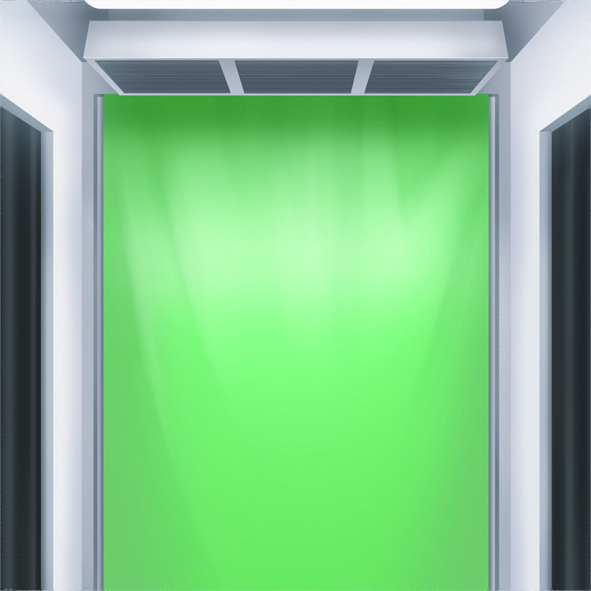
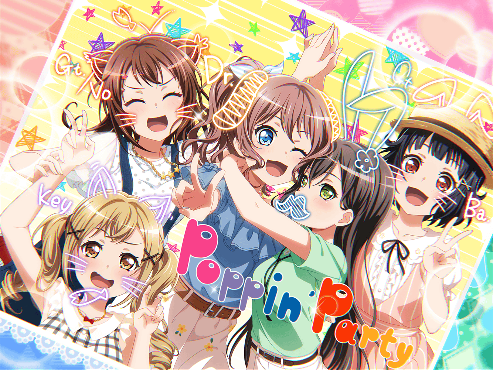

午後６時５０分
ショッピングモール
香澄
あ～、楽しかった～♪
次行く時のために、新しい歌練習しておこーっと！
沙綾
あ、それと！
さっき言った、ハモる歌も選ばなきゃだよね！
香澄
そっか！
けど五人で２時間だと、あっと言う間だよね。
なんかまだ歌い足りない感じ
有咲
つーか、お前は途中、散々メドレー歌ってたじゃねーか
りみ
授業の２時間は長いけど、
カラオケの２時間はホントにすぐだよね
有咲
その２時間でおたえはドリンクバー何往復したんだ？
たえ
わかんないけど、２回くらい？
有咲
もっと行ってるだろ！ 明らかに！
沙綾
ははは。
あ、ねえ、もう７時になるよ。
そろそろ帰らないと
香澄
え？ けど、あれは！？
まだ、さーやのやり残したことやってないよ！
りみ
そうだよね！
さっき沙綾ちゃん、考えておくって言ってたけど、
なにか思いついた？
沙綾
え～、やっぱり思いつかないよー。
だってみんなでいるとこんなに楽しいんだよ？
それだけでホント満足しちゃうんだって
香澄
えー、なんかやろうよ～。
遠慮とかそういうのはナシだよ、さーや
沙綾
違う違う！
遠慮とかじゃないから！
有咲
つーか香澄さ～。
沙綾がそう言ってるんだから、それでいいんじゃねーの？
別に無理やりやることでもねーだろ？
香澄
確かにそれはそうなんだけど……
たえ
沙綾が思いついたら、またみんなで一緒に来ればいいんだよ
沙綾
うん、それでいいよ。
またみんなで来たいし！
沙綾
今日はホントに楽しかったな～。
たまに弟と妹をショッピングモールに連れてくることあるけど、
こんなに長い時間いたことないよ
りみ
そうなんだ。
普段はどんな感じなの？
沙綾
普段は大体地下の食料品売り場に行くでしょ？
そしたら弟と妹が絶対オモチャを見たがるから、
オモチャ屋さんに行って――
香澄
さーやの行きたいお店とかは行かないの？
沙綾
ほら、弟達が飽きちゃうから。
で、最後にオモチャ屋さんの隣の
ゲームコーナーでちょっと遊んで……
沙綾
…………あ
香澄
どうしたのさーや？
沙綾
私……あれやりたいかも……！
香澄
え！？ なに！？
どれどれ！？

香澄
さーや！ 背景どれにする？
すっごいたくさん種類があるんだよ！
沙綾
ここはやっぱり……☆でしょ。
Poppin'Partyと言ったら、絶対☆だもん
りみ
だよね！
私も、それがいいなって思ってたんだ！
たえ
なんか目の大きさも変えられるよ？
どうする？
有咲
おたえはいじるなって！
キラプリのことよく知らねーだろ！？
たえ
有咲だって知らないでしょ？
有咲
う、うるせーな！
香澄
けど、さーやがキラプリで写真撮りたいって
結構意外だったな～
沙綾
そんなこと言わないでよー。なんか恥ずかしいじゃん。
二人をゲームコーナーに連れてくると、
みんな友達同士で撮ったりしてるからさ
りみ
そういえばポピパのみんなで撮ったことなかったもんね
沙綾
今日の記念にみんなで１枚ずつわけよう！
……ていうか有咲、笑顔が硬いよ。緊張しすぎ！
有咲
わ、私はこういうの苦手なんだっての……っ！
香澄
それじゃあ、この設定でいっちゃうよ！
いいよね！？ ではでは～、スタート！！
キラプリカウント
３……
２……
１……
香澄
これすっごくいいよね！
みんな最高の笑顔じゃないっ！？
りみ
ホントだ！
沙綾ちゃんめっちゃ楽しそうな顔してる！
有咲
つーか、この沙綾の笑顔はズルすぎだろー？
写り方が、うますぎるって！
沙綾
ふふ、そうかな？
全然無意識だったけど♪
りみ
沙綾ちゃん、さっきの香澄ちゃんと同じこと言ってる……
たえ
有咲の表情……お腹痛いの？
有咲
うるせーな！
香澄
それじゃあ……はい、さーや、ペン！
最後にさーやがデコって！
沙綾
え、私？
ちょっと責任重大じゃない？
沙綾
え～、どうしよう！？
どうしたらいいかわからないよ～
たえ
それじゃあ、私はうさぎの耳、描いて欲しいな
りみ
それかわいい！
私もうさぎの耳、描いてくれる？
香澄
じゃあ私と有咲は猫の耳！
ね、有咲？ お揃いでいいよね！？
有咲
ま、まー、別に私は何でもいいし
沙綾
えっと……おたえとりみりんがうさぎの耳で、
香澄と有咲が猫の耳ね……
……こんな感じかな？
香澄
うわ！ めちゃくちゃいいじゃん！
そしたら、あとはヒゲね！
沙綾
ヒゲ……？
えっと、こんな感じ？
有咲
マジか、沙綾！？ ヒゲってそれじゃねーだろ！
急に、おたえが貴族みたいになったぞ！
沙綾
え……？ 違ってた？
りみ
あれだよ、沙綾ちゃん……っ！
ほっぺたに３本線！
沙綾
ほっぺたに……？
……あっ、そっか！！ そっちのヒゲか〜！！
ははははは、だって香澄が急にヒゲって言うからさ～
香澄
え？
今のは私、悪くないよね！？
沙綾
ははは……
ごめんごめん。今、描き直すね
たえ
あ、待って！
私はそのままでいいよ
有咲
気に入ってるし！
